먼저 생각해 보세요.
Es wird wärmer werden. 이 문장은 언제의 일을 말하나요?
werden + 동사 원형은 앞으로 일어날 일을 말해요.
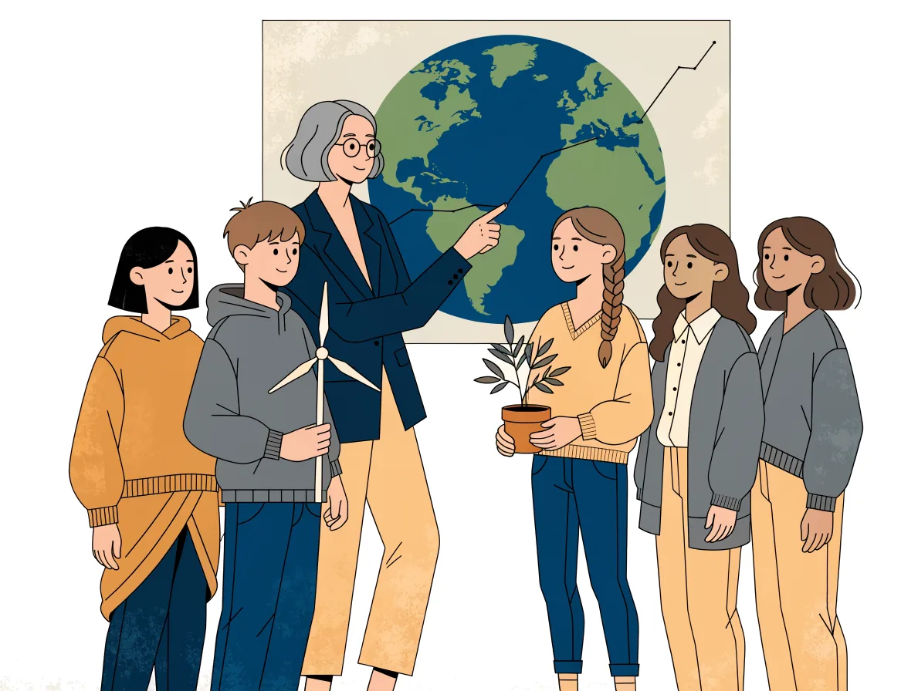
2월, 학교에서 기후를 주제로 한 주 동안 프로젝트 수업(Projektwoche)을 해요. 9b는 앞으로 지구가 어떻게 될지 알아보고, 학교에서 무엇을 바꿀 수 있는지 이야기해요.
눌러서 들어 보세요.
먼저 생각해 보세요.
Es wird wärmer werden. 이 문장은 언제의 일을 말하나요?
werden + 동사 원형은 앞으로 일어날 일을 말해요.
Lektion 6의 낱말 다섯 개를 다시 떠올려 보세요.
문법 Futur I (Es wird wärmer werden.), nicht nur … sondern auch, sowohl … als auch, entweder … oder, weder … noch
이 과를 마치면 기후 문제를 놓고 이야기하고, 앞일을 예측하고, 해결책을 제안할 수 있어요.
프로젝트 수업 첫날, 9b 교실이에요. Frau Schneider가 지구의 기온이 어떻게 변해 왔는지 보여 줘요.
들으면서 찾아보세요. Lukas는 무엇을 걱정하나요?
프로젝트 수업 넷째 날, 팟캐스트 팀이 해결책을 놓고 이야기해요. Elif가 진행해요.
들으면서 찾아보세요. 9b는 4월에 무엇을 하기로 하나요?
두 대화를 듣고 답하세요.
Wie viel wärmer ist es auf der Erde in den letzten hundert Jahren geworden?
Emma findet zuerst, dass ein Grad nicht viel ist.
Wie werden die Sommer wahrscheinlich?
Wo wohnen Lukas' Großeltern?
Lukas will jeden Tag eine Stunde mit dem Rad zur Schule fahren.
Er will weder eine Stunde Rad fahren noch um sechs aufstehen.
Was will Lukas verändern?
9b는 4월에 무엇을 하기로 하나요?
낱말 32개예요. 낱말이나 예문 앞의 단추를 누르면 소리가 나요. 명사는 der, die, das를 색으로 구분했어요.
das Klima 기후
Das Klima verändert sich.기후가 변하고 있어요.
der Klimawandel 기후 변화
Der Klimawandel ist ein großes Problem.기후 변화는 큰 문제예요.
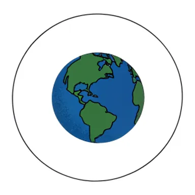
die Erde 지구, 땅
Wir haben nur eine Erde.지구는 하나뿐이에요.
der Planet, die Planeten 행성
Die Erde ist unser Planet.지구는 우리의 행성이에요.
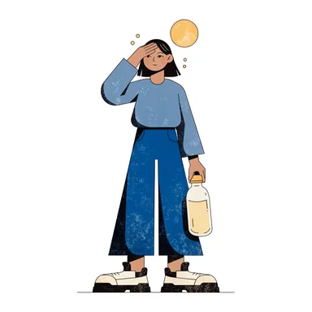
die Hitze 더위
Bei dieser Hitze kann ich nicht lernen.이런 더위에는 공부할 수가 없어요.
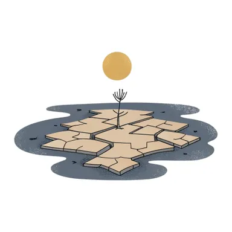
die Dürre, die Dürren 가뭄
Nach der langen Dürre gab es wenig Gemüse.긴 가뭄 뒤에 채소가 모자랐어요.
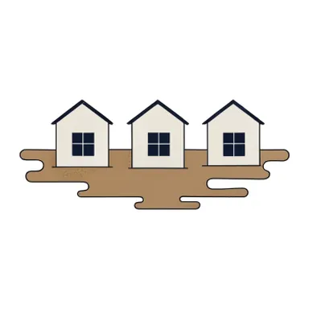
die Überschwemmung, die Überschwemmungen 홍수
Nach dem Regen gab es eine Überschwemmung.비가 온 뒤에 홍수가 났어요.
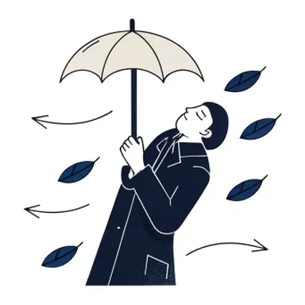
der Sturm, die Stürme 폭풍
Der Sturm war sehr stark.폭풍이 아주 셌어요.
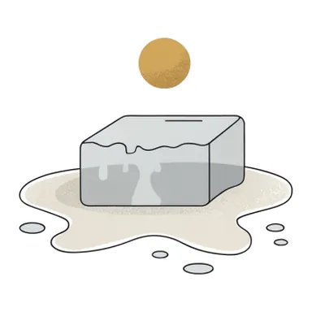
schmelzen, ist geschmolzen (es schmilzt) 녹다
Das Eis schmilzt in der Sonne.얼음이 햇볕에 녹아요.
der Meeresspiegel 바닷물 높이
Der Meeresspiegel steigt.바닷물 높이가 올라가요.
die Energie, die Energien 에너지
Wir brauchen saubere Energie.우리는 깨끗한 에너지가 필요해요.
erneuerbar 다시 쓸 수 있는, 재생 가능한
Wind und Sonne sind erneuerbare Energien.바람과 햇빛은 재생 에너지예요.
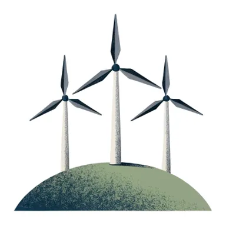
das Windrad, die Windräder 풍력 발전기
An der Nordsee stehen viele Windräder.북해에는 풍력 발전기가 많아요.
verbrauchen, hat verbraucht 쓰다, 소비하다
Unsere Schule verbraucht viel Strom.우리 학교는 전기를 많이 써요.
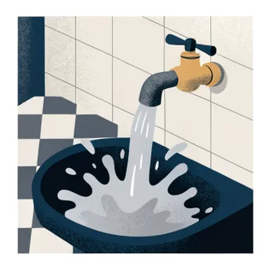
verschwenden, hat verschwendet 낭비하다
Wir verschwenden zu viel Wasser.우리는 물을 너무 많이 낭비해요.
vermeiden, hat vermieden 피하다, 만들지 않다
Wir wollen Müll vermeiden.우리는 쓰레기를 만들지 않으려고 해요.
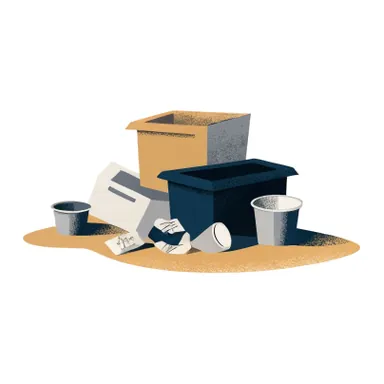
die Verpackung, die Verpackungen 포장
Die Verpackung ist aus Plastik.포장은 플라스틱이에요.
nachhaltig 지속 가능한
Rad fahren ist nachhaltig.자전거 타기는 지속 가능해요.
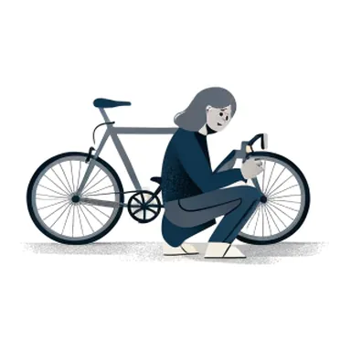
reparieren, hat repariert 고치다
Opa repariert mein Fahrrad.할아버지가 내 자전거를 고쳐 주세요.
tauschen, hat getauscht 맞바꾸다
Wir tauschen Kleidung.우리는 옷을 바꿔 입어요.
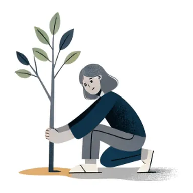
pflanzen, hat gepflanzt 심다
Wir pflanzen im Herbst Bäume.우리는 가을에 나무를 심어요.
der Baum, die Bäume 나무
Im Schulhof steht ein alter Baum.운동장에 오래된 나무가 한 그루 있어요.
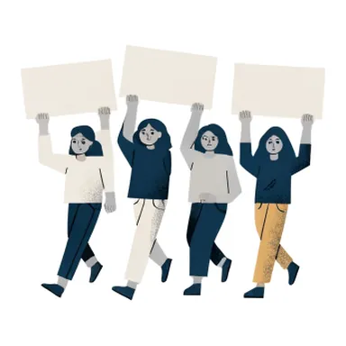
die Demonstration, die Demonstrationen 시위
Am Freitag gibt es eine Demonstration.금요일에 시위가 있어요.
demonstrieren, hat demonstriert 시위하다
Viele Schüler demonstrieren für das Klima.많은 학생이 기후를 위해 시위해요.
die Politik 정치
Die Politik muss schneller handeln.정치가 더 빨리 움직여야 해요.
fordern, hat gefordert 요구하다
Die Schüler fordern mehr Bäume im Schulhof.학생들은 운동장에 나무를 더 심으라고 요구해요.
die Verantwortung 책임
Jeder trägt Verantwortung für die Erde.누구나 지구에 책임이 있어요.
handeln, hat gehandelt 행동하다
Wir müssen jetzt handeln.우리는 지금 행동해야 해요.
die Hoffnung, die Hoffnungen 희망
Ich habe Hoffnung für die Zukunft.나는 미래에 희망을 품고 있어요.
die Sorge, die Sorgen 걱정
Ich mache mir Sorgen um die Erde.나는 지구가 걱정돼요.
wahrscheinlich 아마
Es wird wahrscheinlich regnen.아마 비가 올 거예요.
die Vorhersage, die Vorhersagen 예측, 예보
Die Vorhersage für morgen ist gut.내일 예보는 좋아요.
이 과의 낱말로 여덟 문제를 풀어요.
예문을 보고 답해 보세요.
Ich werde weniger Fleisch essen. 맨 끝에 오는 낱말은 어떤 모양인가요?
규칙
앞일을 예측하거나 다짐할 때 Futur I을 써요. werden을 둘째 자리에 쓰고 동사 원형을 맨 끝에 써요. morgen, nächstes Jahr처럼 때를 나타내는 말이 있으면 현재형으로도 앞일을 말할 수 있어요.
| werden | 맨 끝 | |
|---|---|---|
| ich | werde | sparen |
| du | wirst | sparen |
| er, sie, es | wird | sparen |
| wir, sie, Sie | werden | sparen |
| ihr | werdet | sparen |
주의 werden은 세 가지로 써요. Ich werde Ärztin. (되다) Der Müll wird getrennt. (Passiv) Es wird regnen. (Futur)
예문을 보고 답해 보세요.
sowohl A als auch B는 무슨 뜻인가요?
규칙
둘 다 해당할 때 sowohl … als auch나 nicht nur … sondern auch를 써요. nicht nur … sondern auch는 뒤에 오는 것을 더 힘주어 말해요. sondern 앞에는 쉼표를 찍어요.
| 이음말 | 보기 |
|---|---|
| sowohl … als auch | Ich mag sowohl Hunde als auch Katzen. |
| nicht nur … sondern auch | Er spart nicht nur Strom, sondern auch Wasser. |
주의 sowohl … als auch 앞에는 쉼표를 찍지 않아요.
예문을 보고 답해 보세요.
weder A noch B는 무슨 뜻인가요?
규칙
둘 가운데 하나를 고를 때는 entweder … oder를, 둘 다 아닐 때는 weder … noch를 써요. weder … noch에는 이미 '아니다'라는 뜻이 들어 있어서 nicht나 kein을 또 쓰지 않아요.
| 보기 | |
|---|---|
| entweder … oder | Wir fahren entweder mit dem Zug oder mit dem Bus. |
| weder … noch | Ich habe weder Zeit noch Geld. |
주의 entweder가 문장 맨 앞에 오면 바로 뒤에 동사가 와요. Entweder kommst du mit oder du bleibst hier.
Lukas가 팟캐스트에 쓰려고 북해에 사시는 할아버지와 통화해요. 듣고 답하세요.
Opa an der Nordsee
Lukas Opa, hat sich das Wetter an der Nordsee verändert?
Opa Oh ja. Als ich ein Kind war, hatten wir jeden Winter Schnee. Heute regnet es fast nur noch.
Opa Und die Stürme werden stärker. Letztes Jahr hat unser Garten zweimal unter Wasser gestanden.
Lukas Hast du Angst vor der Zukunft?
Opa Angst nicht, aber Sorgen. Der Meeresspiegel wird steigen. Wir werden unser Haus besser schützen müssen.
Opa Aber ich habe auch Hoffnung. Ihr werdet vieles besser machen als wir.
Wie war der Winter, als Opa ein Kind war?
Opas Garten hat letztes Jahr zweimal unter Wasser gestanden.
Was wird der Meeresspiegel tun?
할아버지는 앞날을 어떻게 생각하나요?
듣고 알맞은 것을 고르세요.
Elif는 내일 무엇을 타나요?
Morgen wird es regnen. Ich werde den Bus nehmen.
Emma가 스스로 고치는 것은 무엇인가요?
Ich repariere sowohl mein Fahrrad als auch mein Handy selbst.
Lukas는 주말에 무엇을 했나요?
Am Wochenende habe ich weder Hausaufgaben gemacht noch mein Zimmer aufgeräumt.
Yuna는 어떻게 가나요?
Entweder fahre ich mit dem Rad oder ich gehe zu Fuß.
9b가 학교 신문에 쓴 기사예요. 읽고 답하세요.
Projektwoche: Unser Planet
Letzte Woche hatte unsere Schule eine Projektwoche zum Thema Klima. Die 9b hat geprüft, wie viel Energie die Schule verbraucht.
Das Ergebnis: Sowohl in den Klassenzimmern als auch in der Sporthalle ist oft das Licht an, obwohl niemand da ist.
Außerdem werden viele Verpackungen weggeworfen, weil es am Kiosk weder Gläser noch Teller gibt.
Die Klasse fordert: Die Schule soll nicht nur Strom sparen, sondern auch weniger Müll machen.
Ab März wird es am Kiosk keine Plastikbecher mehr geben. Jeder bringt seine Flasche mit.
Frau Schneider sagt: „Wahrscheinlich werden wir so jedes Jahr viel Geld sparen.“
Was hat die 9b in der Projektwoche geprüft?
Wo ist oft das Licht an?
Am Kiosk gibt es Gläser und Teller.
Am Kiosk gibt es weder Gläser noch Teller.
Was wird ab März anders?
Frau Schneider는 무엇을 기대하나요?
9b가 정한 계획표예요. 보고 답하세요.
Unsere Ideen für das Klima
| Idee | Wer? | Ab wann? |
|---|---|---|
| Licht ausmachen | alle | ab morgen |
| Rad fahren | Yuna, Emma | ab März |
| Kleidung tauschen | Emma, Elif | im April |
| Bäume pflanzen | die Klasse | im Herbst |
Wer macht ab morgen das Licht aus?
Die Klasse pflanzt im April Bäume.
나무는 가을에 심어요. 4월에는 옷을 바꿔요.
Wann ist der Tauschtag?
Futur I이에요. 알맞은 말을 고르세요.
Es wärmer werden.
더 따뜻해질 거예요.
Die Sommer heißer werden.
여름은 더 더워질 거예요.
Ich mehr mit dem Rad fahren.
나는 자전거를 더 많이 탈 거예요.
Wirst du weniger Fleisch ?
너는 고기를 덜 먹을 거야?
맨 끝에는 동사 원형이 와요.
Wir werden im Herbst Bäume .
우리는 가을에 나무를 심을 거예요.
ihr zur Demonstration gehen?
너희는 시위에 갈 거야?
한국어 뜻을 보고 알맞은 말을 고르세요.
Ich mag Hunde als auch Katzen.
나는 개도 고양이도 좋아해요.
Lukas isst weder Fisch Salat.
Lukas는 생선도 샐러드도 안 먹어요.
Wir fahren entweder mit dem Zug mit dem Bus.
우리는 기차나 버스를 타요.
Er spart nicht nur Strom, auch Wasser.
그는 전기뿐 아니라 물도 아껴요.
kommst du mit oder du bleibst hier.
같이 가든지 여기 있든지 해.
Das ist teuer noch schwer.
그건 비싸지도 어렵지도 않아요.
알맞은 낱말을 고르세요.
Wegen der bleiben wir heute im Haus.
더위 때문에 우리는 오늘 집에 있어요.
Das Eis in der Sonne.
얼음이 햇볕에 녹아요.
Wir sollten weniger Energie .
우리는 에너지를 덜 써야 해요.
Die Schüler für das Klima.
학생들이 기후를 위해 시위해요.
Mein Fahrrad ist kaputt. Ich muss es .
자전거가 망가졌어요. 고쳐야 해요.
Jeder trägt für die Erde.
누구나 지구에 책임이 있어요.
낱말을 순서대로 눌러 문장을 만드세요.
더 따뜻해질 거야.
우리는 에너지를 덜 쓸 거야.
나는 개도 고양이도 좋아해.
Lukas는 생선도 샐러드도 안 먹어.
낱말과 뜻을 짝지으세요.
듣고 그대로 써 보세요.
Es wird wärmer werden. 더 따뜻해질 거예요.
Wir müssen jetzt handeln. 우리는 지금 행동해야 해요.
Auch kleine Schritte helfen. 작은 걸음도 도움이 돼요.
Es wird … werden. ~해질 거야.
Wahrscheinlich wird … 아마 ~할 거야.
In zwanzig Jahren werden wir … 20년 뒤에 우리는 ~할 거야.
Ich glaube, dass … 나는 ~라고 생각해.
Ich mache mir Sorgen um … 나는 ~이 걱정돼.
Das macht mir Sorgen. 그게 걱정돼.
Ich habe Hoffnung, weil … ~해서 나는 희망이 있어.
Wir sollten … 우리는 ~하는 게 좋겠어.
Wir könnten sowohl … als auch … ~도 ~도 할 수 있어.
Entweder … oder … ~하든지 ~하든지
Mein Vorschlag ist: … 내 제안은 이거야.
Das stimmt, aber … 맞아, 하지만 …
Das sehe ich anders. 나는 다르게 생각해.
Da hast du recht. 그건 네 말이 맞아.
Was meinst du? 너는 어떻게 생각해?
대화 B에서 역할을 하나 고르세요. 상대의 말은 음성으로 나오고, 내 차례에는 직접 말해요.
내 생각을 적으세요. 완성된 문장을 소리 내어 읽어 보세요.
Ich mache mir Sorgen um die Hitze im Sommer.
Ich fahre mit dem Rad zur Schule.
Ab morgen werde ich weniger Plastik kaufen.
Morgen esse ich weder Fleisch noch Fisch.
Was kann unsere Schule tun?
학교 신문에 우리 학교가 기후를 위해 할 수 있는 일을 제안하는 글을 써요. 일곱 문장쯤 써요.
Der Klimawandel ist ein großes Problem. Die Sommer werden heißer werden und es wird mehr Stürme geben. Unsere Schule verbraucht zu viel Energie. Wir sollten sowohl Strom als auch Wasser sparen. Am Kiosk gibt es zu viele Verpackungen. Entweder bringen wir Flaschen mit oder am Kiosk gibt es nur noch Flaschen aus Glas. Nicht nur die Politik, sondern auch wir Schüler tragen Verantwortung. Ich werde ab morgen mit dem Rad zur Schule fahren.
다 쓴 뒤에 확인해 보세요.
Ich kann über den Klimawandel sprechen und sagen, was sich verändert.기후 변화를 이야기하고 무엇이 변하는지 말할 수 있어요.
Ich kann sagen, was in Zukunft wahrscheinlich passieren wird.앞으로 아마 무슨 일이 일어날지 말할 수 있어요.
Ich kann Lösungen vorschlagen und meine Meinung dazu sagen.해결책을 제안하고 내 의견을 말할 수 있어요.